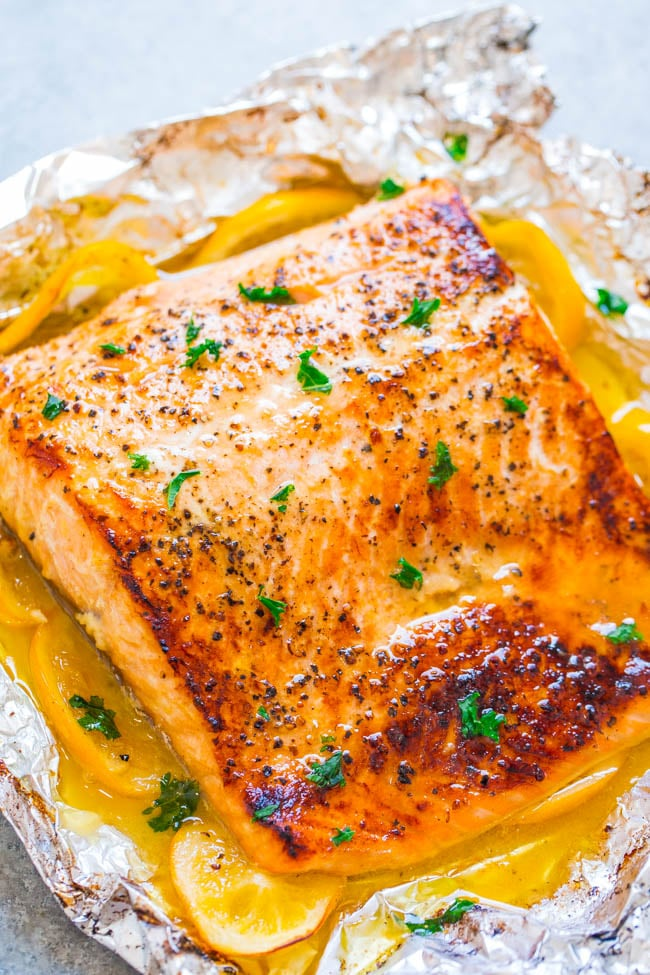

Salmon

Description
Butter that's infused with lemon, garlic, and a touch of honey helps give
this salmon tons of flavor and keeps it extremely moist and tender. This
version incorporates garlic, because why not? My family loves garlic and
since salmon is a robust fish, it can stand up to the garlic without being
overwhelmed.
Ingredients
- Skin-on salmon fillet
- Whole lemon + lemon juice
- Unsalted butter
- Honey
- Garlic
- Kosher salt
- Black pepper
- Fresh parsley
Steps
- You'll first need to line your baking tray with foil; fold up the edges a bit so the garlic butter sauce doesn't spill out.
- Place the salmon on the foil-lined tray, then nestle lemon slices underneath.
- In a small bowl, stir together the melted butter, lemon juice, garlic, and honey. Pour most of it over the salmon, but reserve a little bit for serving.
- Season the salmon with salt and pepper, then fold the foil over the filets and bake.
- You'll need to bake the salmon for about 17 minutes in a sealed foil pack and then unseal it so the salmon is exposed.
- At this point, switch over to broiler mode and let the broiler crisp up the top and edges of the salmon.